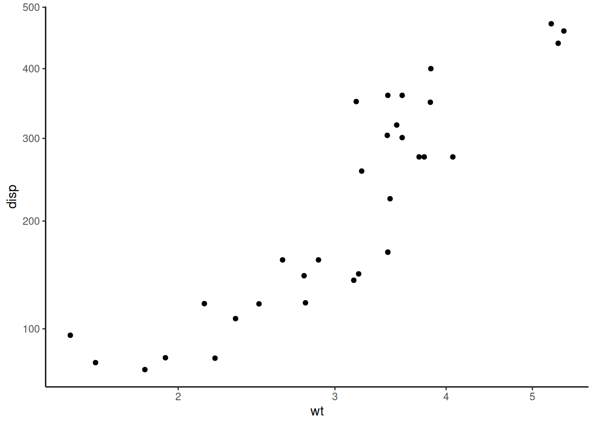
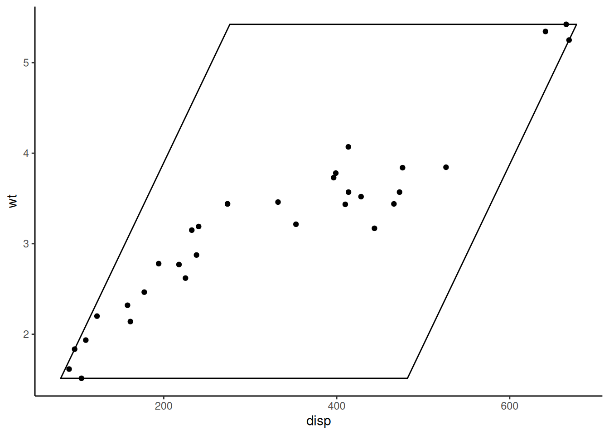

ggplot2 has many built-in coordinate systems which
are used to both 1) produce the two-dimensional position of the plotted
data and 2) draw custom axes and panel backgrounds.
coord_geo() uses this second purpose to draw special axes
that include timescales. However, deeptime also
includes a number of other coordinate systems whose primary function is
to modify the way data is plotted. To demonstrate this, we’ll first need
to load some packages.
# Load deeptime
library(deeptime)
# Load ggplot for making plots
# It has some example data too
library(ggplot2)coord_trans meets coord_flip
One limitation of the traditional coord_trans() function
in ggplot2 is that you can not flip the axes while also
transforming the axes. Historically, you would need to either 1) use
scale_x_continuous() or scale_y_continuous()
to transform one or both of your axes (which could result in the
untransparent loss of data) in combination with
coord_flip() or 2) transform your data before supplying it
to ggplot(). coord_trans_flip() accomplishes
this without the need for scales or transforming your data.
It works just like coord_trans(), with the added
functionality of the axis flip from coord_flip().
ggplot(mtcars, aes(disp, wt)) +
geom_point() +
coord_trans_flip(x = "sqrt", y = "log10") +
theme_classic()
Note: back in 2020, ggplot2 updated all the directional stats and geoms (e.g., boxplots and histograms) to work in both directions based on the aesthetic mapping. This somewhat makes this function redundant, but I still find it useful.
2D linear transformations
Another limitation of the traditional coord_trans() is
that each axis is transformed independently.
coord_trans_xy() expands this functionality to allow for a
two-dimensional linear transformation as generated by
ggforce::linear_trans(). This allows for rotations,
stretches, shears, translations, and reflections. A dummy example using
the ?mtcars dataset from ggplot2 is included
below. While applications of this functionality may seem abstract for
real data, see the plotting traits article for
a potential real-world application using species trait data.
# make transformer
library(ggforce)
trans <- linear_trans(shear(50, 0))
# set up data to be plotted
square <- data.frame(disp = c(min(mtcars$disp), min(mtcars$disp),
max(mtcars$disp), max(mtcars$disp)),
wt = c(min(mtcars$wt), max(mtcars$wt),
max(mtcars$wt), min(mtcars$wt)))
# plot data normally
library(ggplot2)
ggplot(mtcars, aes(disp, wt)) +
geom_polygon(data = square, fill = NA, color = "black") +
geom_point(color = 'black') +
coord_cartesian() +
theme_classic()
# plot data with transformation
ggplot(mtcars, aes(disp, wt)) +
geom_polygon(data = square, fill = NA, color = "black") +
geom_point(color = 'black') +
coord_trans_xy(trans = trans, expand = TRUE) +
theme_classic()